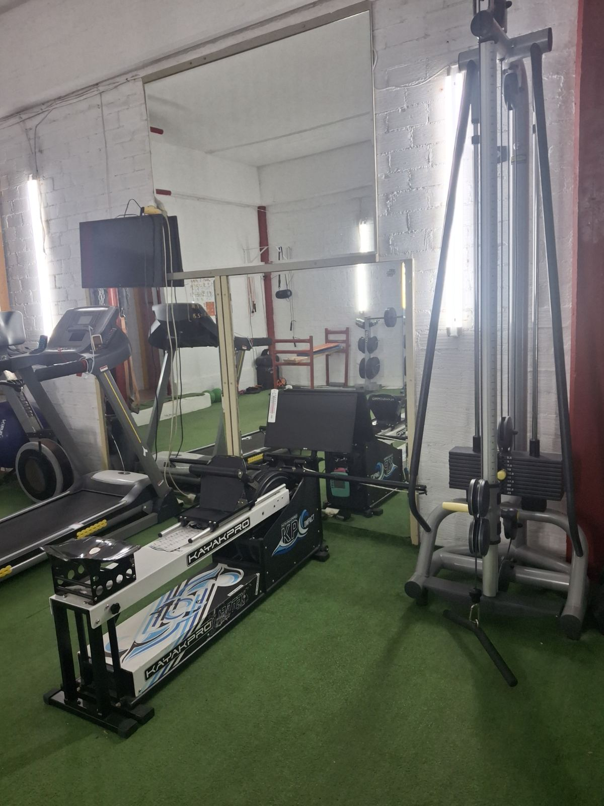
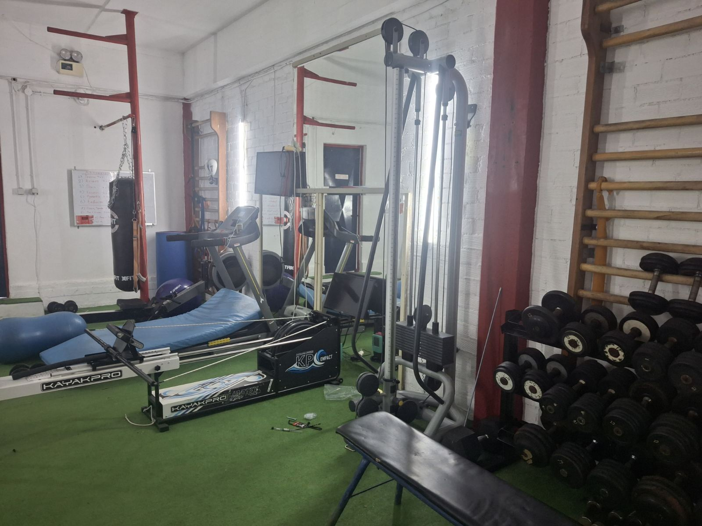
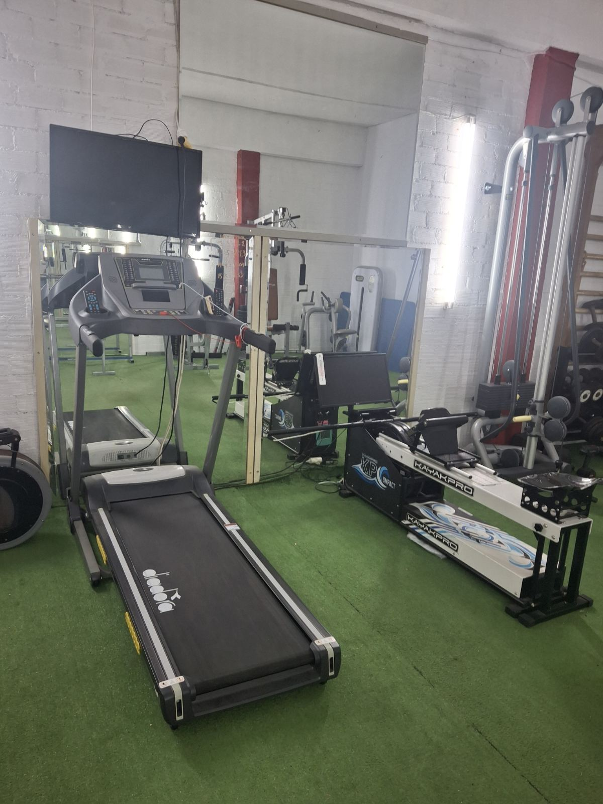
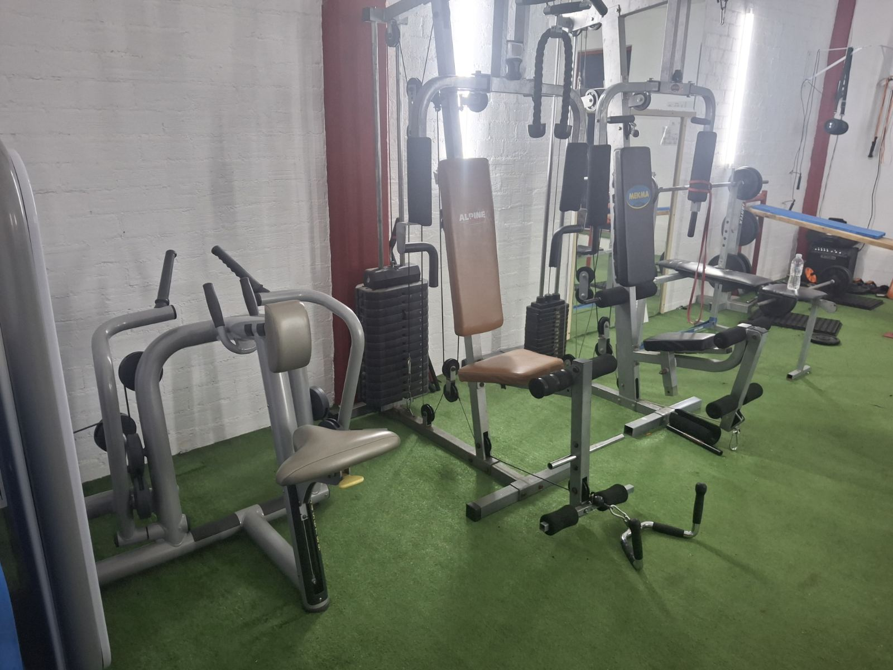
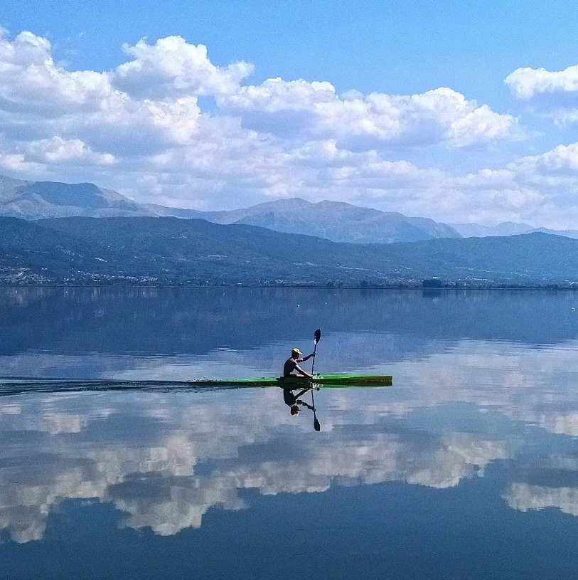
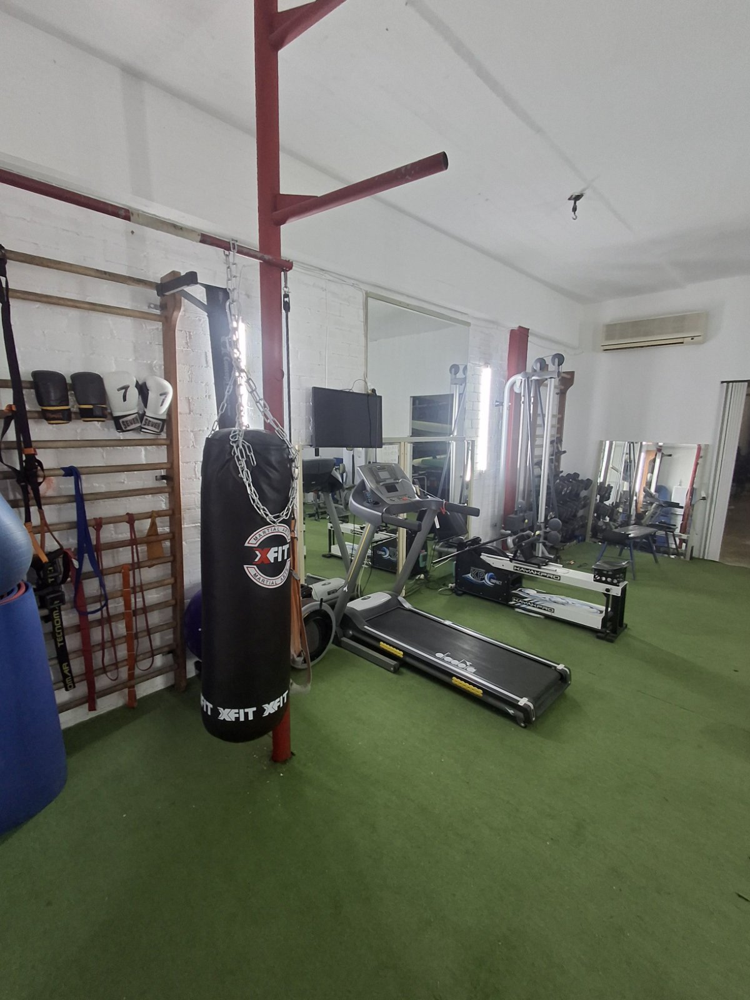
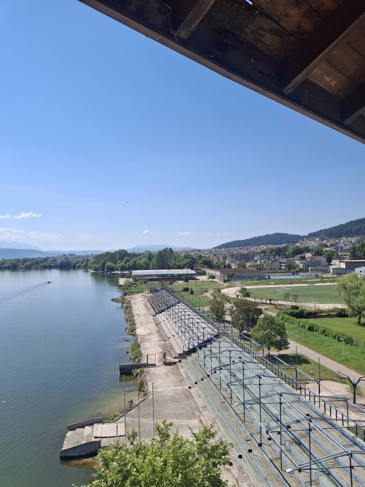
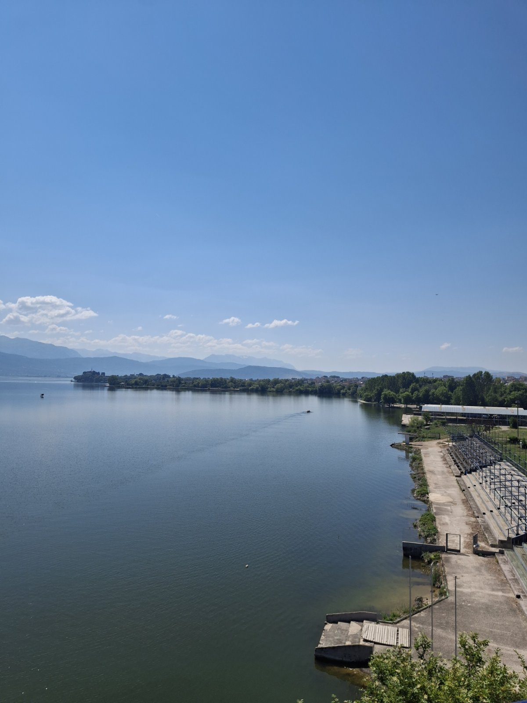

Οι εγκαταστάσεις μας
Ο ΝΟΠ διαθέτει προπονητικούς χώρους στη Λιμνοπούλα, με πρόσβαση στη λίμνη Παμβώτιδα και υποδομή για προπόνηση τόσο στο νερό όσο και στη στεριά.








Γυμναστήριο
Στον χώρο υπάρχουν και τα πιστοποιητικά και οι διακρίσεις που αποτυπώνουν την αγωνιστική και εκπαιδευτική πορεία του Ομίλου.
Ο χώρος διαθέτει εργόμετρα KayakPro, διάδρομους, πολυόργανα, ελεύθερα βάρη και εξοπλισμό ενδυνάμωσης για τη συμπληρωματική και χειμερινή προπόνηση.
Υγρός στίβος
Η προπόνηση πραγματοποιείται στη λίμνη Παμβώτιδα, με άμεση πρόσβαση από τις εγκαταστάσεις της Λιμνοπούλας και το λεμβαρχείο.